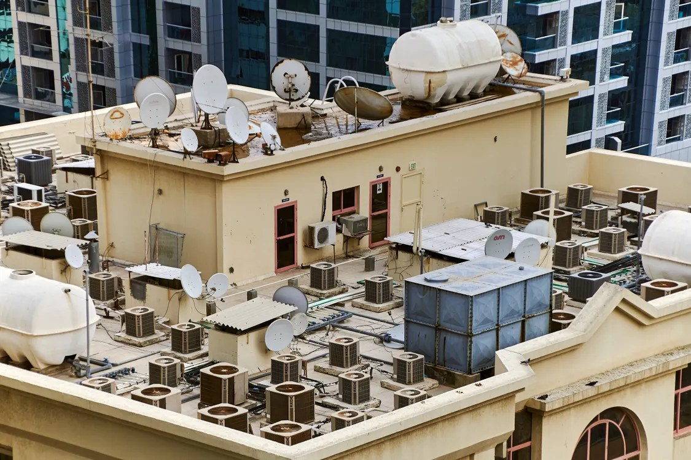

Absolute Aerial Inspections & Repairs LLC is a Belleville, Michigan company built on decades of commercial roofing work — now using thermal drone technology to do the job better.
Commercial roofs are expensive, and most owners only hear about a problem after it has already caused damage. We started Absolute Aerial Inspections & Repairs to change that: use a thermal drone to find moisture and weak spots early, explain the findings in plain language, and give property managers a report and a score they can budget against.
The name Absolute matters to us. It comes from Absolute Roofing, a business our family started years ago — and we kept it in memory of Freddie, who came up with the name. We intend for it to stand for the same thing now: straight answers about your roof.

A commercial rooftop — HVAC units, vents, and penetrations are all part of what we inspect.
Owner & Founder, Pilot
Dylan founded AIR and runs operations, flights, and reporting. He spent 2 years doing commercial roof repairs with CentiMark, one of the largest roofing contractors in the country, and holds an FAA Part 107 pilot license.
Advisor, Pilot
Harve brings more than 35 years as a journeyman roofer to every inspection — the judgment that turns a thermal image into a real finding. He also holds an FAA Part 107 pilot license, and his network across Michigan roofing, union and non-union, is part of how AIR gets work done.
Roof repairs & maintenance
Dylan leads our repair and maintenance work, with Jacob — who is experienced in commercial roofing — as the second man on the crew.
If you manage or own commercial property in Southeast Michigan, we’d like to be the company you call before a small roof problem becomes a big one.